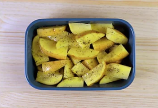

Paso a Paso
-
Paso 1: Empezamos precalentando el horno a 200º C. Pelamos la cebolla y la cortamos en aros de 0,5 cm. Separamos los aros de cebolla y los colocamos en una fuente apta para horno. Lavamos y partimos un limón. Troceamos una mitad y exprimimos el zumo de la otra mitad. Bañamos la cebolla con el zumo del medio limón.

-
Paso 2: Ponemos los muslos de pollo sobre la cama de cebolla, el limón troceado, el tomillo fresco y los dientes de ajo partidos por la mitad.

-
Paso 3: En un mortero picamos el romero seco y lo mezclamos con la mitad del vino blanco, los 50 ml. de aceite de oliva virgen extra, la sal y la pimienta. Removemos bien para que se mezclen los ingredientes. Pincelamos la carne con la mezcla de romero y bañamos la bandeja con el resto.
-
Paso 4: Horneamos con calor arriba y abajo. El tiempo más o menos de 40 - 45 minutos a 200º C en la bandeja del medio. Durante el horneado vamos regando con la mitad que nos queda del vino blanco, para que siempre tenga un poco de líquido y no se quede seco.
-
Paso 5: Lavamos bien las patatas y las cortamos en gajos sin pelar.
-
Paso 6: Las pasamos a otra fuente de horno y bañamos con los otros 50 ml de aceite. Espolvoreamos sal, pimienta y romero seco. Horneamos durante una hora a 200º C.
 -
Paso 7: Una vez horneado el pollo y las patatas asadas, las sacamos del horno. Servimos el pollo acompañado de las patatas asadas.